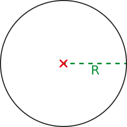

|
Chapitre 12
|
- Longueur et périmètres
|
Activité Introduction
- Découper, dans une feuille épaisse, un disque de diamètre 4cm, puis placer un point M sur le bord du cercle.
-
Construire un axe graduée de 15cm comme ci-dessous :

-
Placer le disque sur l'axe graduée en faisant correspondre le point M avec l'origine, puis faire tourner le disque le long de l'axe comme indiqué sur la figure ci-dessous.
-
Noter l'abscisse du point M lorsque le disque fait un tour complet. A quelle longueur cette abscisse correspond-elle ?
-
Diviser la longueur du cercle par son diamètre, puis arrondir ce résultat au centième près.
-
Refaire la même mesure et le même calcul avec un cercle de 3cm de diamètre.
-
Que constate-t-on ?
-
Que peut-on dire de la formule permettant de trouver le périmètre du cercle ?
Longueurs :
Dans le système métrique, l'unité usuelle de longueur est le mètre noté « m ».
Unités de longueur
Multiples
Sous-Multiples
Décamètre
1 dam = 10 m
Décimètre
1 dm = 0,1 m
Hectomètre
1 hm = 10 dam = 100 m
Centimètre
1 cm = 0,1 dm = 0,01 m
Kilomètre
1 km = 10 hm = 100 dam = 1 000 m
Millimètre
1 mm = 0,1 cm = 0,01 dm = 0,001 m
Tableau de conversion :
Kilomètre
km
Hectomètre
hm
Decamètre
dam
Mètre
m
Décimètre
dm
Centimètre
cm
Millimètre
mm
2
7
0
0
0,
0
0
5
| 2,7 hm = 2 700 dm |
5 cm = 0,005 dam |
Périmètres :
Le périmètre d'une figure plane est la longueur du contour de celle-ci. (On le note souvent $\mathscr{P}$)
Polygone :
Le périmètre d'un polygone est égal à la somme de la longueur de tous ses côtés.
Exemple :
Ici le polygone ABCDE a pour périmètre $\mathscr{P}=4+4,5+4+2,5+3=18 cm$

Cas particuliers
Carré de côté c.
$\mathscr{P}=4\times c$ |
Rectangle de longueur L et largeur ùìÅ.
$\mathscr{P}=2\times L+2\times \mathscr{l}=2\times(L+\mathscr{l})$ |
 |
|

Attention, toutes les longueurs doivent être exprimés avec la même unité (ou sous unité).
Cercle :
Le périmètre d'un cercle est égal au produit de son diamètre par le nombre π (pi)
Avec un diamètre D
$\mathscr{P}=D\times \pi$ |
Avec un rayon R
$\mathscr{P}=2\times R\times \pi$ |
 |
 |
Exemple :
Le périmètre d'un cercle de diamètre 6cm est $\mathscr{P}=6\times \pi \approx 18,8 cm$.
Remarque :
- $\pi$ représente un nombre particulier. $\pi \approx 3,1415$.
- Il existe la journée de PI le 14 mars (en anglais 03/14).